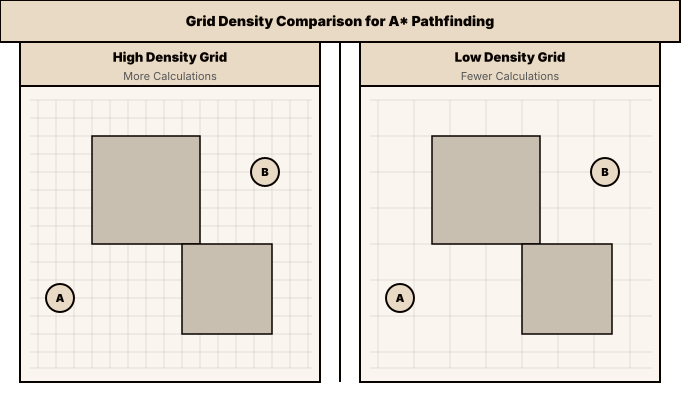
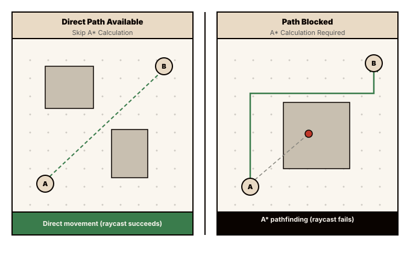

Optimizations in 2D Pathfinding Algorithms
Preface
When you build your own game there's a high chance you end up needing some sort of pathfinding algorithm. A common reason for this may be having enemies chase your character through varying obstacles (which is the exact reason I had to implement it).
While many modern game engines like godot come with built in pathfinding algorithms, the engine I've chosen for my project (flame) did not. But that's fine, as there's a certain beauty in building algorithms from scratch. I ended up choosing the A algorithm, as I found it to be the most efficient for my game, due to its heuristic nature. This article will maintain a high-level perspective and won't teach you how to implement the A algorithm from scratch; there are many resources available online if you're looking for that.
Finding a path between two points across a maze of obstacles is computationally expensive.. Due to this, I want to showcase the steps I've taken to optimize the A* pathfinding algorithm for smooth implementation in my game.
Grid Density
The A* algorithm operates on a grid (your game might have a built-in grid system or you could implement a logical grid if your game uses continuous coordinates). Tweaking this grid is the most obvious and time-efficient improvement you can make to increase your algorithm's performance. Just by widening your grid, you can drastically reduce the amount of computations needed to find a path between two points.
This approach has its limitations and is dependent on the way your game and obstacles are implemented. The cells of your grid need to be small enough to catch every collision-relevant position of an obstacle. They should not create too large a distance between your path and obstacles, while being as large as possible while still fulfilling these requirements.

Don't calculate a path if you don't need one
Since calculating a path is an expensive operation, we should only make use of it when we really need it. Only run this computation when the direct path from point A to point B is blocked by at least one obstacle. In other cases, you can skip the path calculation altogether and just have your entities move in a straight line. Raycasts are a very good fit for this check, by periodically casting a ray from your start to your destination you can repeatedly check whether you're in need of a path around an obstacle.

Shared Paths
Depending on your game, there might be instances where you have numerous entities needing a path to the same destination. Examples include controlling groups of units in strategy games or a horde of enemies chasing your player in an RPG. Having each of your entities calculate its individual path to the destination is a computational nightmare. YYou can prevent this by using Shared Paths (or Path Caching). This strategy involves calculating a path once and then having each individual entity replace only the early path segments with its own unique path. While you still have to calculate the early segments for each unit, these paths are much shorter and will save you a significant amount of computational overhead compared to full individual paths.
Early exiting
Games are very dynamic in their nature. If one of your entities calculates a path to its desired destination, by the time it gets there, the destination might have moved away again (picture an enemy chasing a player). So calculating the entire path might oftentimes be a waste of resources. This is where early exiting comes into play. You break out of your pathfinding algorithm once you've either collected a path long enough to satisfy the next few game loop iterations until recalculation, or crossed a duration threshold inside your algorithm. Doing these shorter calculations will improve your algorithm's performance as well as have your entities react more dynamically to events in your game.